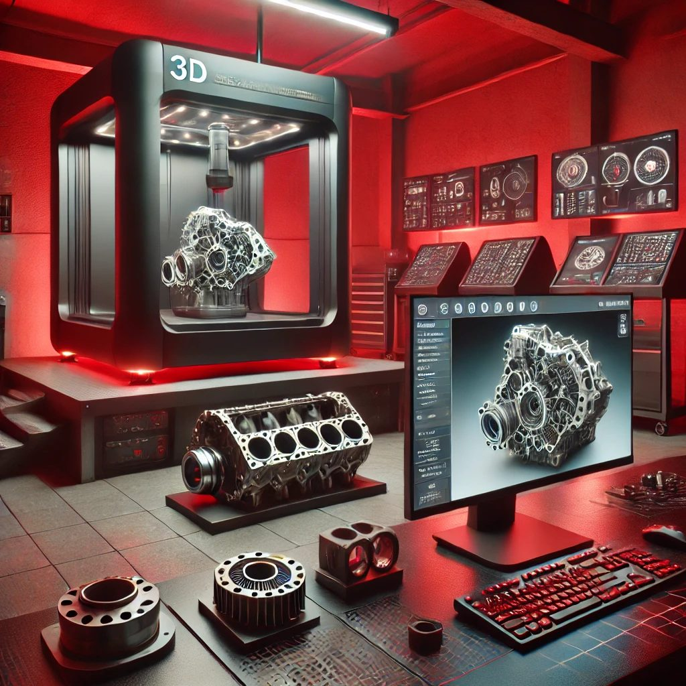
01
3D Scanning
Capture any part, product or space as an accurate digital model.
3D Scanning & 3D Design Services
Precise 3D scanning and innovative 3D design that transform physical parts, products and spaces into digital models — and back into physical prototypes.
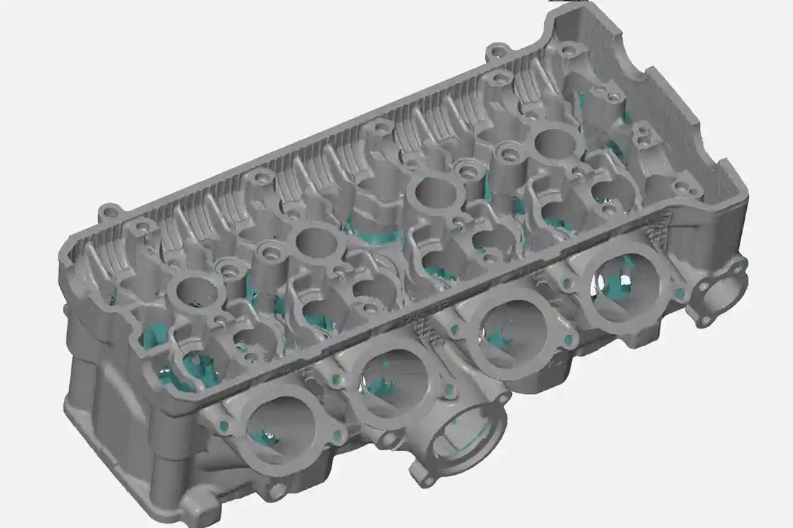
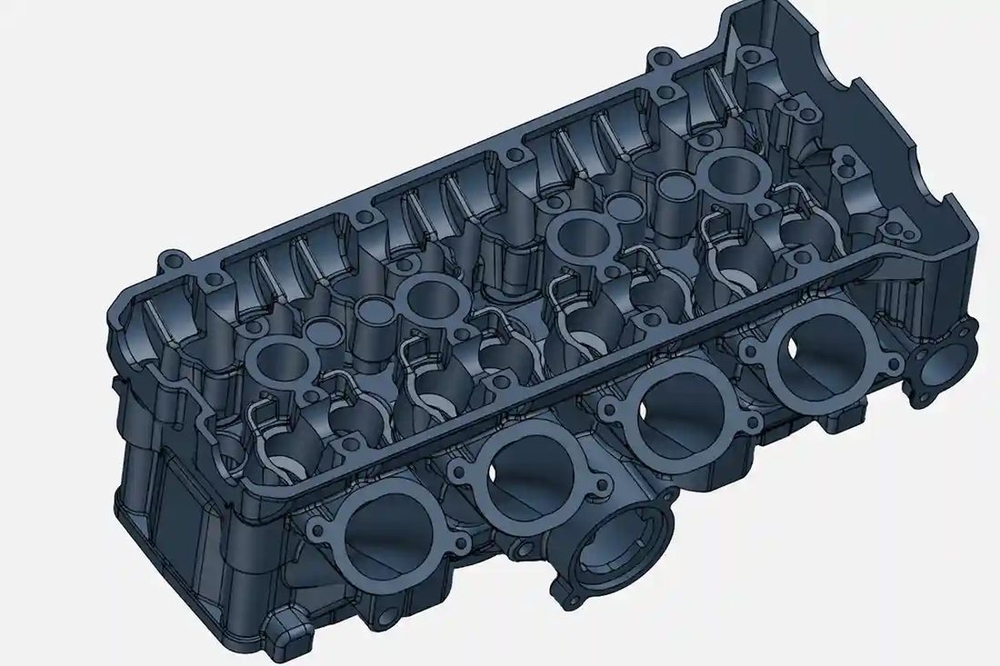
( 01 ) — Who we are
VShark Solutions provides state-of-the-art 3D scanning and 3D design services for businesses and individuals.
We capture parts, products and spaces as accurate digital data — then engineer that data into editable CAD, flawless surfaces, BIM models, inspection reports, prototypes and photoreal visuals. One partner, from the physical object to the finished digital deliverable and back again.
( 02 ) — Services
Use one service on its own, or hand us the whole job — from first scan to final file.

Capture any part, product or space as an accurate digital model.
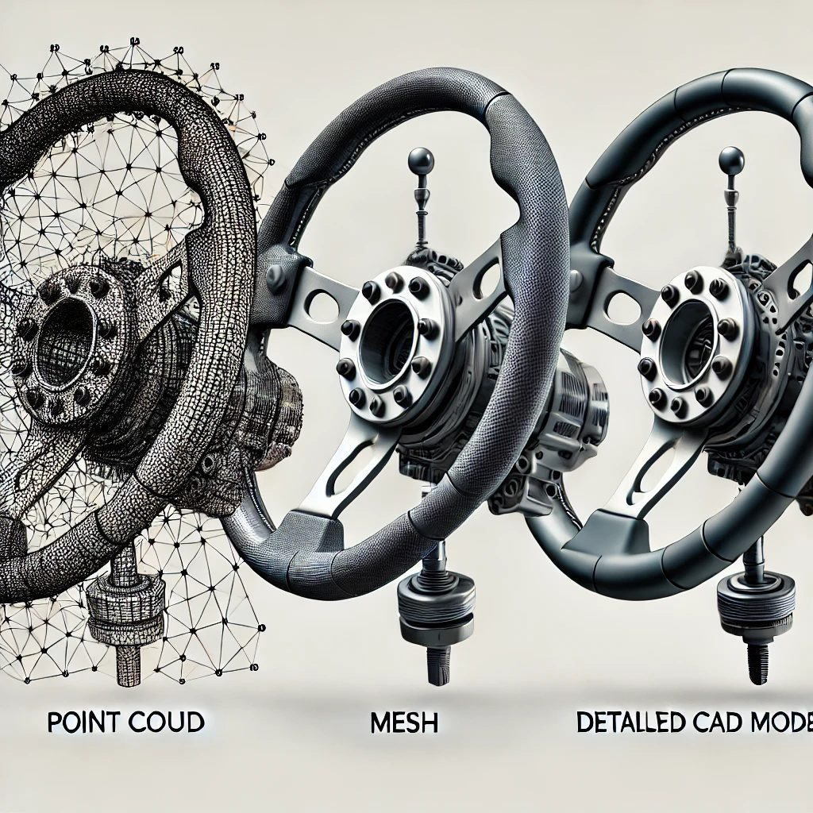
Turn scan data into fully editable, manufacturable CAD.
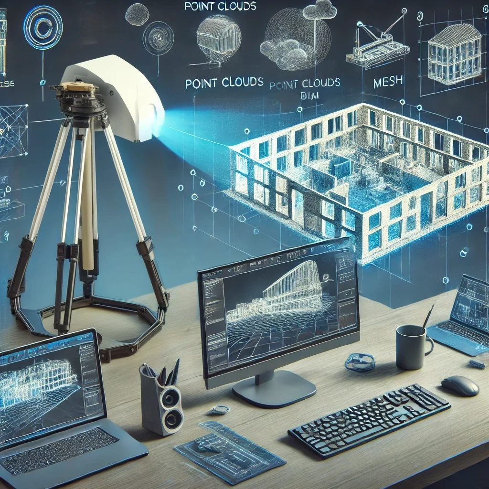
Existing buildings captured as accurate, intelligent BIM models.
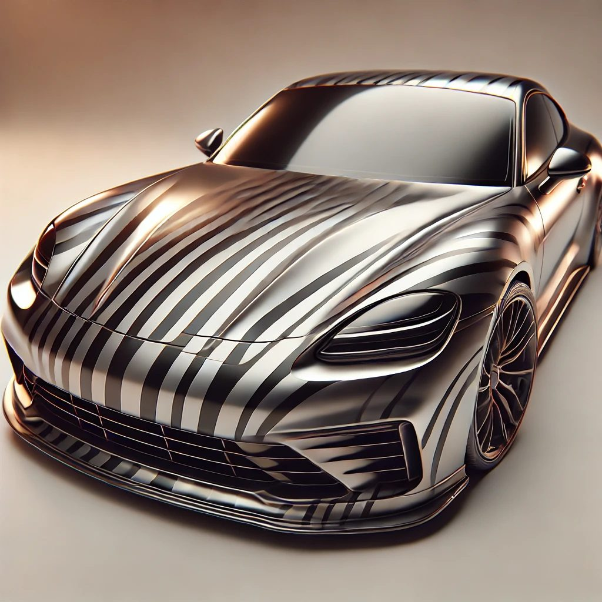
Flawless, curvature-continuous surfaces for visible parts.
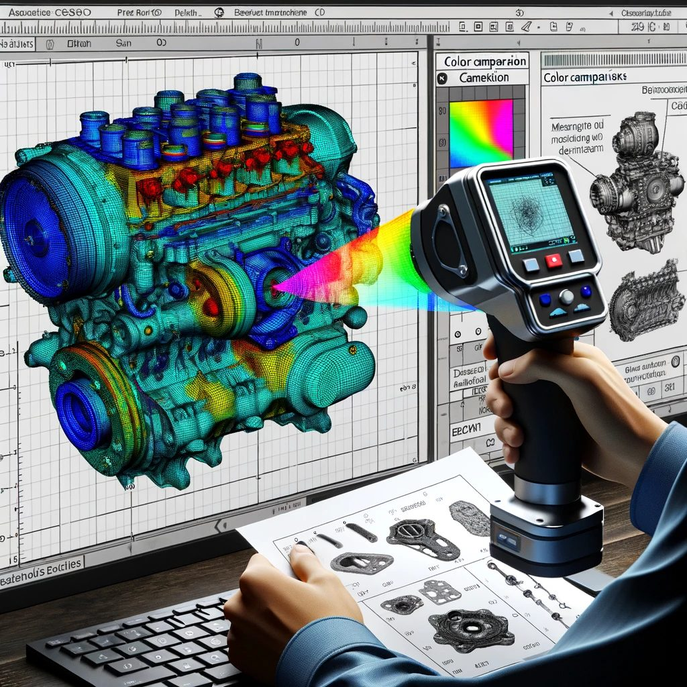
Compare manufactured parts to their CAD — to the micron.
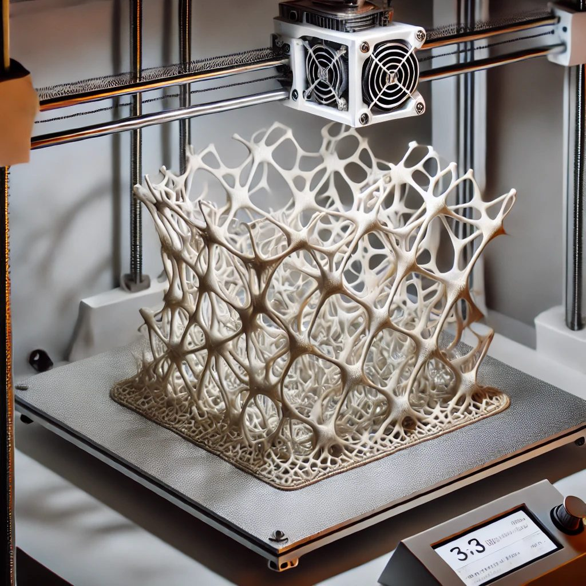
Rapid prototypes and functional parts, straight from your model.
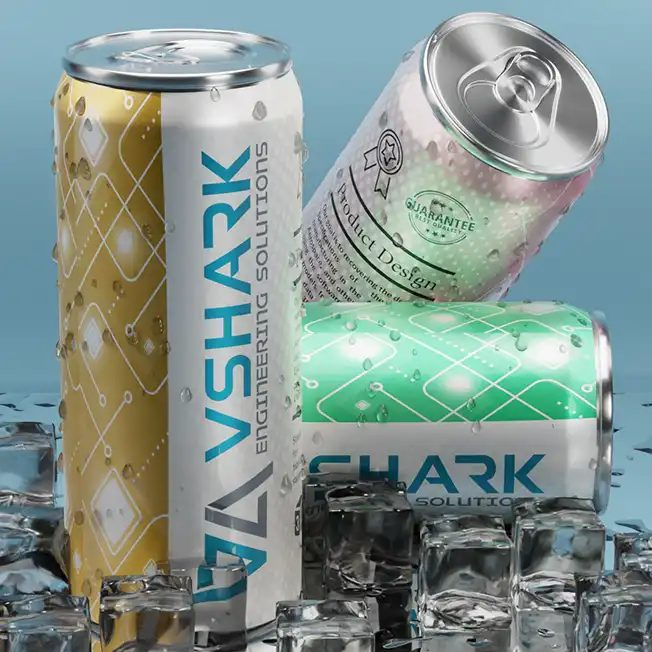
Photoreal visuals that sell a product before it is ever made.
Scan, engineer, inspect, print and render — under one roof, with one point of contact.
( 03 ) — How we work
We scan the part, product or site — in our lab or on location.

Scans are aligned, cleaned and merged into usable, watertight data.

CAD, Class A surfaces, BIM or inspection built from that data.
Native files, drawings and reports in the formats your team uses.
( 02.1 ) — Services
Capture any part, product or space as an accurate digital model.
We scan parts of every size with a range of professional 3D scanners — from small precision components to car bodies and full buildings. The result is a precise digital copy of the physical object, ready for product design, reverse engineering and quality control.
Deliverables
Industries
( 02.2 ) — Services
Turn scan data into fully editable, manufacturable CAD.
We rebuild physical parts as parametric CAD models — for re-manufacturing legacy parts with no drawings, modifying existing designs, or creating moulds and tooling. You choose how faithful the model should be to the scanned part.
Deliverables
Industries
( 02.3 ) — Services
Existing buildings captured as accurate, intelligent BIM models.
We laser-scan existing structures and convert the point cloud into detailed BIM models. Architects, engineers and contractors get an accurate as-built foundation for renovation, retrofit and facility-management projects — with every wall, slab, column and service documented.
Deliverables
Industries
( 02.4 ) — Services
Flawless, curvature-continuous surfaces for visible parts.
Class A surfaces are the visible skins of a product — car body panels, aircraft fairings, consumer-product housings. We build G2/G3-continuous surfaces with clean patch layouts and verify them with zebra and curvature analysis, so reflections flow without a ripple.
Deliverables
Industries
( 02.5 ) — Services
Compare manufactured parts to their CAD — to the micron.
We inspect manufactured parts by scanning them and comparing the result against the nominal CAD. Colour deviation maps, GD&T checks and first-article reports show exactly where a part is in or out of tolerance — fast, and without contact.
Deliverables
Industries
( 02.6 ) — Services
Rapid prototypes and functional parts, straight from your model.
We print prototypes, fit-check models, jigs, fixtures and short-run end-use parts directly from CAD or scan data. Our team also prepares and repairs files — including sculpted character models — so they print right the first time.
Deliverables
Industries
( 02.7 ) — Services
Photoreal visuals that sell a product before it is ever made.
We turn CAD and design models into photorealistic images and animations for marketing, presentations and design reviews. Materials, lighting and scenes are tuned so your product looks real — and looks its best — before the first unit is built.
Deliverables
Industries
( 04 ) — Portfolio
Real parts we have captured and rebuilt as editable, manufacturable CAD.
Cylinder HeadEngine cylinder head scanned and rebuilt as parametric CAD.
ImpellerBladed impeller captured and modelled with precise freeform blade surfaces.
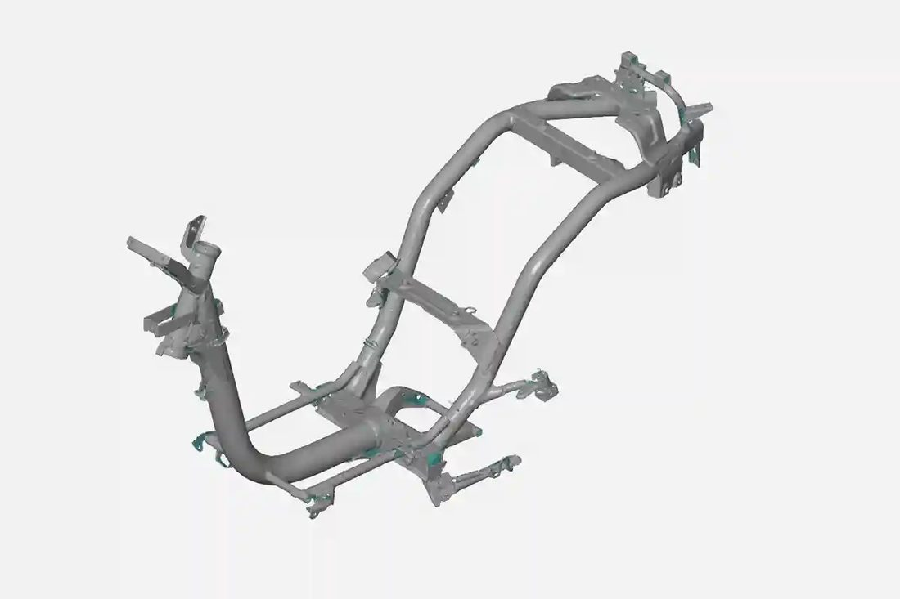
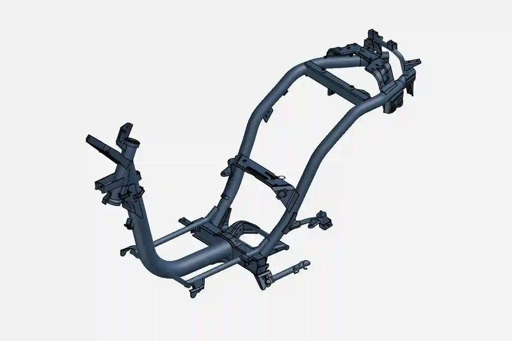
Bike FrameMotorcycle frame digitised and converted into an editable CAD assembly.


BumperVehicle bumper scanned and resurfaced for tooling.
( 04 ) — Portfolio
Surfacing, sculpting and photoreal rendering — visuals that sell a product before it is made.


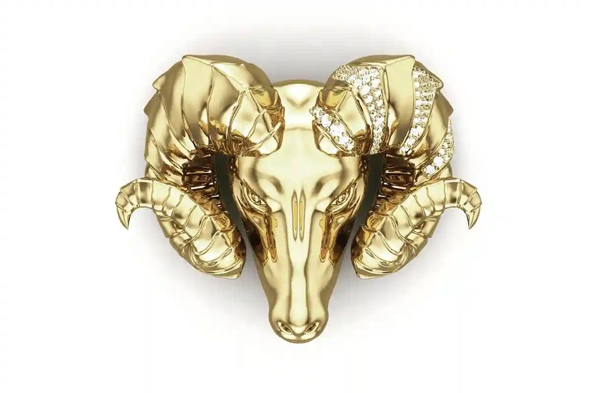

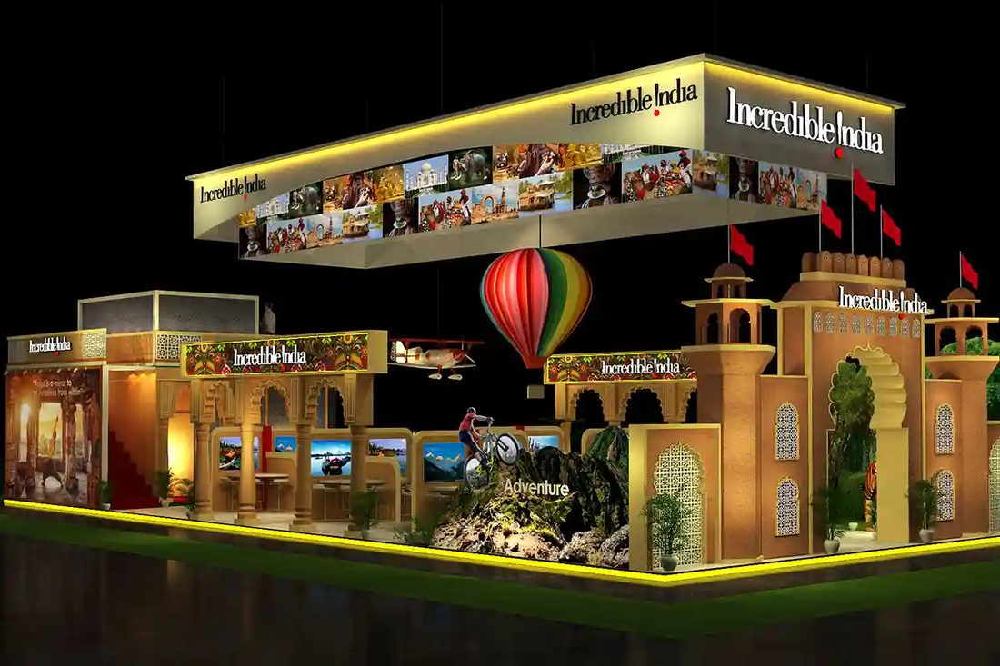
( 05 ) — Industries
Six sectors, one standard of precision.
Inspection and reverse engineering of high-precision aircraft components.
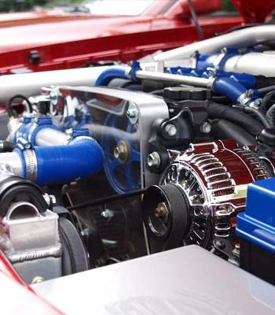
Body surfacing, part digitising and fixture design for vehicles.
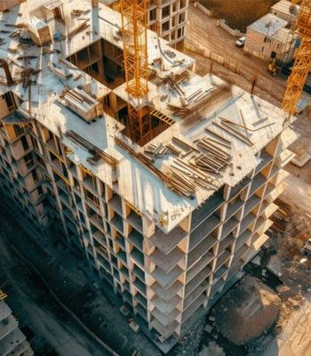
As-built scanning and BIM models for buildings and sites.
Medical devices and custom-fit parts captured and modelled in 3D.
Scanning and 3D printing support for labs, research and teaching.
Fine-detail scanning and printing for jewellery design and casting.
( 06 ) — Products
Vertex blue-laser and optical-tracking scanners — now available from VShark, with training and support.

Handheld blue-laser 3D scanner
0.020mm precision

Handheld blue-laser 3D scanner
0.020mm precision
Optical-tracking 3D scanning system
0.025mm precision
| Specification | Vertex3D | Vertex3D Pro | Vertex Tracker |
|---|---|---|---|
| High-speed scanning | 26 crossed blue laser lines | 50 crossed blue laser lines | 50 crossed blue laser lines |
| Max. scanning speed | 5,400,000 measurements/s | 7,100,000 measurements/s | 7,100,000 measurements/s |
| Max. scanning field | 650 × 550 mm | 650 × 550 mm | 1100 × 800 mm |
| Max. resolution | 0.01 mm | 0.01 mm | 0.01 mm |
| Volume accuracy | 0.015 mm + 0.035 mm/m | 0.015 mm + 0.035 mm/m | 10.0 m³: 0.060 mm · 25.0 m³: 0.083 mm |
| Recommended sample size | > 10 mm | > 10 mm | 10 mm – 8000 mm |
| Output formats | .STL, .PLY, .ASC, .TXT | .STL, .PLY, .ASC, .TXT | .STL, .PLY, .ASC, .TXT |
Recommended PCWindows 10 or later (64-bit) · NVIDIA GTX/RTX GPU (e.g. RTX 4060 or higher), 8 GB+ VRAM · Intel Core i7-13700H or better · 32 GB RAM or more
( 07 ) — What clients say
US · UK · Germany · Canada · UAE · Saudi Arabia
VShark Solutions was able to take a relatively poorly scanned object and convert it to a solid model with very accurate dimensions. Their surfacing skills are amazing, and the accuracy is perfect for our needs.
VSHARK provided the best engineering service we've ever experienced. Their attention to detail and quick responsiveness made working with them a pleasure. We've collaborated with them many times and will continue to do so.
Working with VSHARK on a reverse engineering and 3D modelling project was impressive; their professionalism, clear communication, and dedication to quality made the entire process smooth and efficient.
Exceptional work and accuracy! I will be using VSHARK skills again; I highly recommend them if you need something converted accurately. No need to look further.
VShark Solutions delivered exceptional work beyond my expectations! Their attention to detail and professionalism made the entire process seamless. I highly recommend them for any project.
Working with VSHARK Engineers was a fantastic experience. Their creative approach and attention to detail perfectly aligned with our brand, and they were always polite and cooperative throughout the project.
( 08 ) — Get in touch
Send us a photo, drawing or the part itself — we’ll come back with the right approach, timeline and quote.